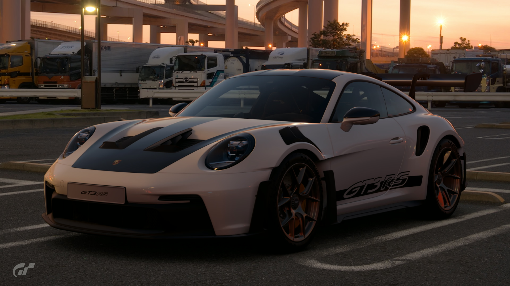
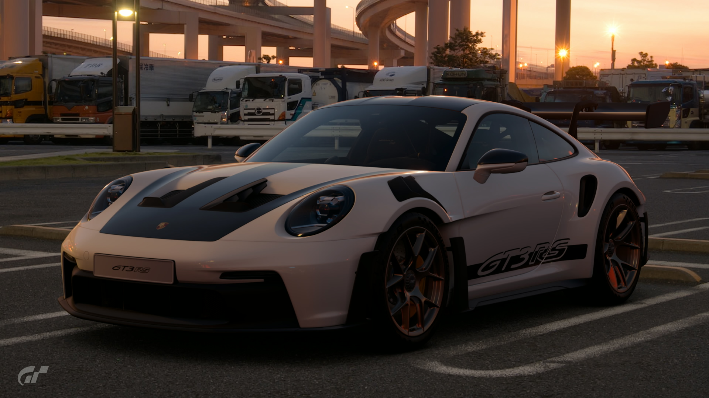

2022 Porsche 911 GT3 RS
The Porsche 911 GT3 RS is the modern incarnation of the legendary 911 Carrera RS from 1973. It was based on the 992 Porsche 911 GT3 from 2021... Which was another special creation from Porsche's motorsports division. Unique to the GT3 RS, however, is all the tech it inherited from racing cars like the 911 RSR and 911 GT3 R. Whether it's on the road or in your garage, this is one sports car that simply exudes the racing spirit!
- Brand New
- Stock
- 6AT
- Yokohama, Japan
- White
- 515hp
¥18,650,000